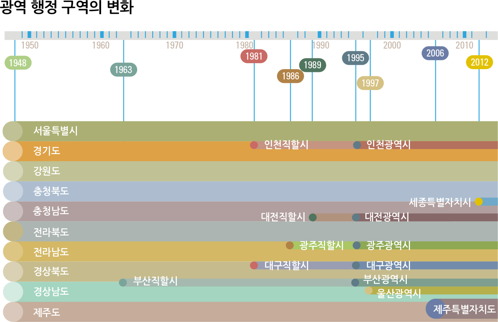

bitSpatial 배경
지역 기반의 통계 분석 니즈
지역 기반의 공공 데이터
- 지역 및 행정구역 기반으로 제공되는 다수의 공공 데이터
- 지역에 대한 경제, 사회, 문화 등의 이해는 중요한 사회과학적인 요소
시각화를 통한 직관적인 정보 공유
- 수치지도 기반으로 집계하여 지도상에 시각화
- 지역에 대한 이해는 좀더 직관적인 시각화 방법이 유용
그러나 현실적인 한계
- 데이터를 지역 기준으로 집계하기 어려움
- 집계한 통계를 시각화하는 방법의 허들 존재
- 협소한 지도 데이터의 리소스
- 공공 기관마다 데이터 표준의 상이함
행정구역 체계의 일반화 이슈
- 삽화소스: 국토지리정보원 청소년을 위한 국가지집(2022 기준)

표준화된 구조
- 광역시도
- 특별시 + 특별자치시 + 특별자치도 + 광역시 + 도
- 시군구
- 시 + 군 + 구
- 읍면동
- 읍 + 면 + 동
예외적인 구조
- 세종특별자치시의 구조
- 2단계 계층
- 광역시도 > 시군구 레벨 없음 > 읍면동
- 충청남도 천안시 동남구 신방동
- 4단계 계층
- 도 + 시 + 구 + 읍면동
- 인구가 팽창하는 도에 포함된 일부 시의 경우 (구) 레벨을 포함하기도 함
- 경기도 수원시, 경기도 성남시, 경기도 고양시 등
행정구역 체계의 변화 이슈
- 삽화소스: 국토지리정보원 청소년을 위한 국가지집(2022 기준)

추이 분석의 이슈
- 지역에 대한 통계가 동일시점 현황 분석을 목적으로 한다면 문제 없음
- 시점별 통계의 변화를 살피는 추이분석을 수행할 경우에는 문제가 발생
- 행정구역 체계의 변경으로,
- 과거의 통계를 현재의 행정구역에 매핑할 수 없는 경우 발생
법정동이냐 행정동이냐 그것이 문제로다
- 광역시도 > 시군구 > 읍면동 레벨에서의 읍면동은 두 가지 기준
법정동
- 법으로 정한 동의 의미로, 법으로 정한 행정구역의 단위
- 1914년 시행된 행정구역 통폐합때 정한 것으로, 현재까지 거의 변동이 없음
행정동
- 행정능률, 주민편의에 의해 설정한 행정구역의 단위
- 인구수 기반으로 나뉘어지며 주민센터에서 관리하는 구역
- 편의에 따라 분할/병합 등의 변경 및 폐지가 발생함
법정동
- 법정동은 변동이 적기 때문에 법정동의 집계기준으로 가져가면,
- 추이분석의 장점이 있지만,
- 공공 데이터에서 법정동 기준으로 배포하는 통계가 상대적으로 적음
행정동
- 행정동은 변동이 많기 때문에 행정동의 집계기준으로 가져가면,
- 추이분석의 단점이 있지만,
- 공공 데이터에서 행정동 기준으로 배포하는 통계가 상대적으로 많음
- 많은 파생 통계가 인구통계 기반으로 작성되기 때문에 인구통계는 중요한 통계
기타 이슈
읍면동 행정구역 레벨 집계의 어려움
- 지번 주소에서 이제는 도로명 주소가 표준 주소 체계로 사용되고 있음
- 도로명 주소는 길게 이어진 도로를 기준으로 만들어진 체계
- 구역을 분할하는 기준이 아님
- 집계해야할 지역기반의 Raw 데이터는 지번주소, 도로명주소가 혼용
- 도로명 주소 정보로 행정동이나 법정동으로 집계
비표준화된 관리 체계
- 행정안전부에서 관리하는 행정동 코드와 통계청에서 관리하는 행정동 코드 체계가 다름
- 공공 데이터를 통합하여 데이터를 분석할 때에는 데이터 수요자가 이 문제를 해결
공공재로서의 수치지도의 한계
- 공공 기관에서 배포하는 행정구역 경계 수치지도 부족 및 오류 포함
- 행정구역 체계의 변화 미지원
- 변화하는 행정 구역체계에 따라 히스토리컬하게 배포하지 않음